New World
Symphony
Players
- Music Director
- Antun Poljanich
- First Violin
- Harris Leung
- Jim Wu
- Gwyneth Nelmes
- Nanae Saga
- Amy Maslen-Miller
- Sung Min Jun
- Woojin Wang
- Grace Nie
- Pearl Hindley
- Simon Tie
- Weihong Yi
- Kauri May
- Ye Li
- Sofie Wigram
- Adrian Robb
- Kenny Li
- Ji Reh Yoo
- Gloria Tian
- Second Violin
- Joseph Chen
- Anne Yu
- Danny Kwok
- Patrick Hayes
- Adrian D'Souza
- Chloë Litchfield
- Jason Yeung
- Michelle Allbury
- Ka Hee Cook
- Catherine Allbury
- Jerry Liu
- Richard Paull
- Genevieve Tang
- Eins Lee
- Viola
- Alex McFarlane
- Anya Leenman
- Jamie Oemcke
- Grace Lam
- Dora Tsao
- Brendon Fisher
- Cello
- Jacky Siu
- Bleau Bustenera
- Lucy McSweeney
- Gemma Henderson
- Ilya Chataline
- Ben Lin
- Sharon Hung
- Cameron Stuart
- Double Bass
- Eric Scholes
- Alex Verster
- Robbie Brown
- Phoebe Johnson
- Flute
- Mikee Bisquera
- Eva Ding
- Oboe
- Noah Rudd
- Josh Webster
- Elizabeth Lewis
- Clarinet
- James Daniell
- Joshua White
- Jay Shen
- Bassoon
- Sasha Rasmussen
- Charlotte Naden
- Mikhael Sayat
- Horn
- Anita Austin
- Ellen Bingham
- Rachel Childs
- Henry Close
- Rebekah Gray
- Trumpet
- Nicholas Allan
- Ben Webster
- Michael Nihotte
- Caleb Probine
- Trombone
- Mark Bingham
- Rachel Smith
- Josh Zhong
- Edward Krishna
- Daniel Nihotte
- Timpani
- Laurence McFarlane
- Paul Robertson
- Percussion
- Paul Robertson
- Tim Doyle
- Sam Girling
- Cameron Stuart
- Anne Yu

 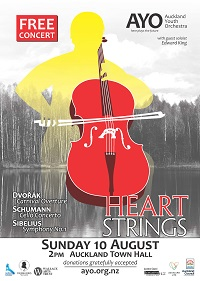
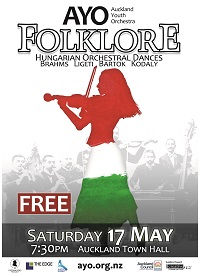
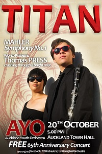
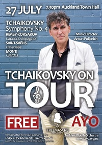
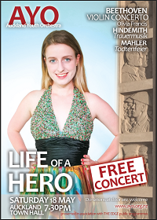
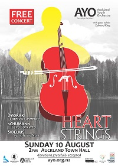
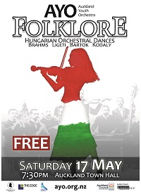
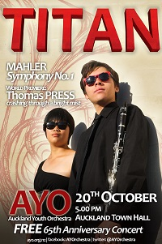
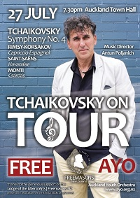
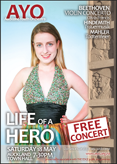
 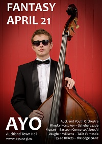
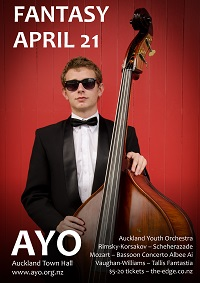
 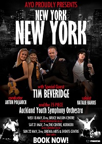
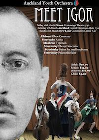
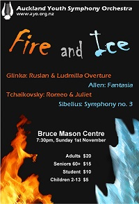
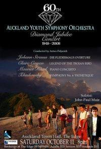
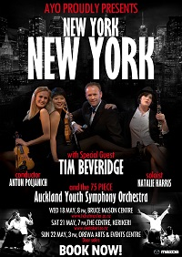
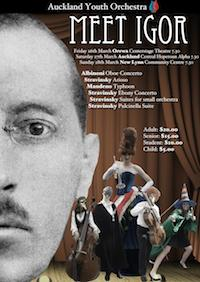
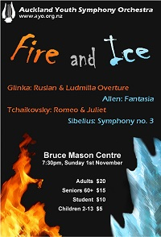
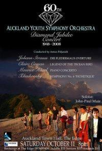
 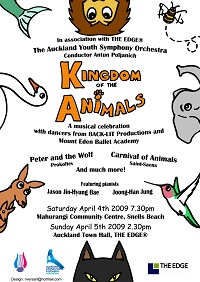
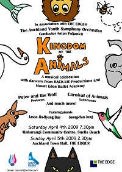
{kind=link}